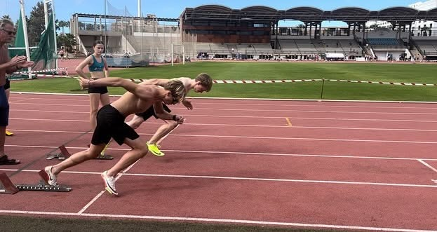
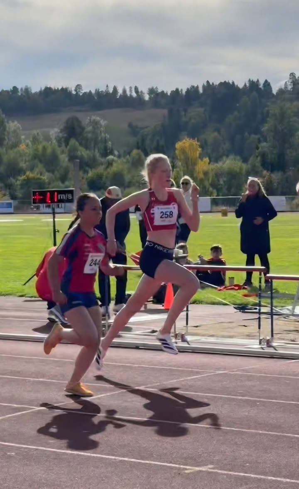
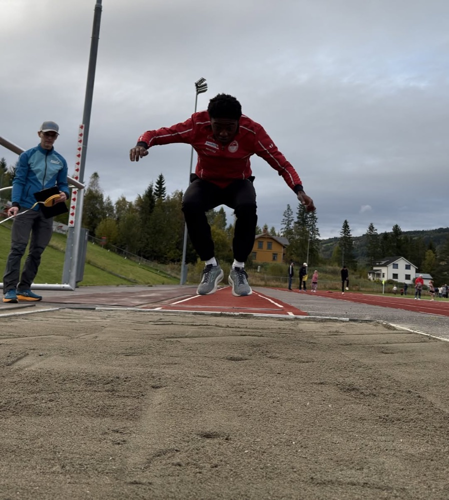

Første gang på stevne
De første stevnene er det mye nytt på én gang. Her står det du trenger å vite før du reiser, og hva som skjer i de vanligste øvelsene. La gjerne en voksen som skal være med, lese dette også.
Før stevnet
Påmelding
Du melder deg på i iSonen, stevnekalenderen til Norges Friidrettsforbund. Meld deg på i god tid før fristen. Klubben betaler startkontingenten for medlemmene, men etter fristen koster det ofte ekstra.
Velg én eller to øvelser de første gangene, og ta dem du har mest lyst til.
Tidsskjema
Arrangøren legger ut tidsskjemaet én til to dager før stevnet, som regel på stevnesiden i iSonen eller på nettsiden til arrangørklubben. Der ser du når øvelsene dine starter.
Stevnene klubben reiser på, står i terminlista. Klubbens eget Vårstevne på Linflåa er et fint sted å begynne.
På stevnedagen
Oppmøte
Kryss deg av på oppmøtelista senest en time før øvelsen starter. Regn med tid til å feste startnummeret og varme opp.
På noen stevner er det ikke avkryssing i hopp og kast. Da holder det å møte til oppropet.
Opprop
Oppropet skjer der øvelsen går, 10–15 minutter før start. Dommeren roper opp navnene i den rekkefølgen dere skal starte, og du svarer når navnet ditt kommer.
Vær ferdig med oppvarmingen før oppropet.
Premier
I klassene 10–12 år får ofte alle deltakerpremie. Ellers er det vanlig med premie til de tre beste, eller til den beste tredjedelen.
På små stevner er det ofte ingen premier.
Sprint og hekk
Dette gjelder 60, 100 og 200 meter og hekkeløpene.
Heat
Er dere mange, blir dere delt i flere heat. Arrangøren prøver å sette sammen løpere som er omtrent like raske. Har du ingen tid fra før, løper du sammen med andre som også er nye.
Starten
Du trenger ikke startblokker hvis du ikke har trent med dem. Mange av de yngste starter stående. Starteren gir disse beskjedene:
- Fløyte og «Gjør klar» Ta av overtrekkstøyet og still deg bak startblokka, eller et par meter bak streken.
- «Innta plassene» Gå fram til streken eller sett deg i blokka. Du skal ikke berøre streken. Stå helt i ro når du er på plass.
- «Klar» Løft deg opp i blokka, eller len deg litt fram hvis du står. Hold kroppen rolig.
- Skuddet Løp. Hold deg i din egen bane, og løp helt over målstreken før du slakker av.
Tjuvstart
Kommer det et skudd til eller et hardt fløytestøt rett etter starten, var det tjuvstart. Gå rolig tilbake til start. Du kan tjuvstarte én gang. Fra 15-årsklassen blir du diskvalifisert allerede første gang.


Hopp og kast
Lengde
Du tar fart og satser på ett bein. Til og med 13-årsklassen satser du i en sone på 50 centimeter, merket med to hvite striper foran gropa. Hoppet måles fra der foten sto, til det bakerste merket i sanda. Satser du forbi den siste stripa, er hoppet dødt og blir ikke målt.
Fra 14-årsklassen satser du fra planken. Len deg framover når du lander, og ikke sett hånda ned bak deg.
Du får prøvehopp først og tre til seks forsøk i konkurransen. Dommeren ved gropa forklarer gjerne underveis.
Høyde
Dommeren spør hvilken høyde du vil begynne på. Konkurransen starter på den laveste høyden noen har valgt.
Du har tre forsøk på hver høyde. Klarer du den, går du videre til neste. Når du har revet tre ganger på samme høyde, er du ferdig.
Du får prøvehopp før konkurransen starter.
Kule
Du støter fra en ring. Gå inn og ut av ringen bak. Grensen er som regel merket med en strek.
Tråkker du over kanten foran etter støtet, er forsøket dødt og blir ikke målt.
Du får prøvestøt først og tre til seks forsøk i konkurransen.


Trenere og foresatte
Stemningen på friidrettsstevner er god, og de fleste er mer opptatt av å slå sin egen pers enn av plasseringen.
Spør oss
Lurer du på noe, spør trenerne på trening før stevnet. På stevnet kan du også spørre dommerne ute på banen. De er vant til nye utøvere.
Beskjeder om stevner kommer i Spond.
Foresatte og tilskuere
Innendørs skal foresatte som regel sitte på tribunen. Utendørs er det friere, men ingen heier fra indre bane.
Pass på at du ikke går i veien for utøvere i løpebanen eller i tilløpene til hopp.
Tipsene bygger på en tilsvarende side hos Lillehammer IF.